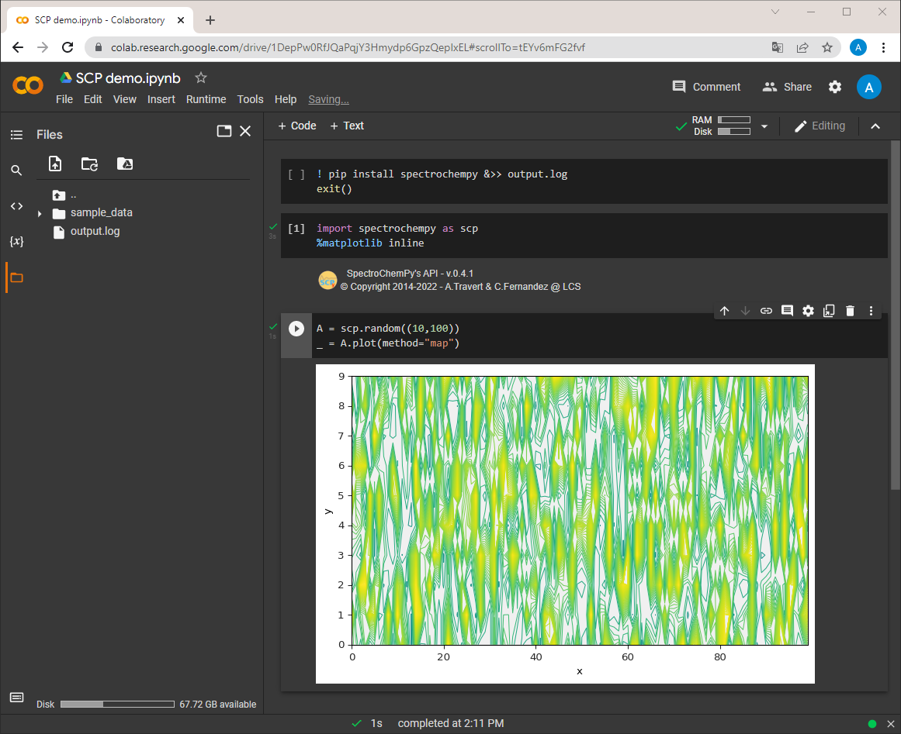

Install in Google Colaboratory (Colab)¶
Maybe you want to try or run SpectroChemPy without installing python and all the necessary packages on your computer.
To do this you can use
Colaboratory,
in short Colab, which allows you to run python notebooks in your browser without any
installation.
The Colab Notebooks are very similar to Jupyter Notebook (from which they derive).
To start with Colab, go to the
Colab website
and create a new notebook or simply execute the example notebook on Colab 
Load and install SpectroChemPy with pip¶
In the first cell, enter and execute the following block of instructions to load and install SpectroChemPy in Colab.
! pip install spectrochempy &>> output.log
exit()
Note
The whole process takes 1-2 minutes. The exit() instruction allows restarting
runtime automatically: do not pay
attention to the popup messages about session crash/restart. You can safely close them.
Then as usual in Jupyter Notebook you can start using SpectroChemPy by inserting adding new code cells:
Warning
Colab notebooks are isolated and thus you need to perform the above operation for all notebook you create… and to run it each time you reopen the notebook for further processing or analysis.
Load data files¶
As Colab notebooks are hosted on Google servers, they have no direct access to your local drive (unlike a Jupyter notebook for instance). There are several ways to load datafiles on the server:
Through the file-explorer pane located on the left-hand side of the Colab window (NOT the File menu which is devoted to notebooks and scripts management !),
Equivalently by importing the
filesmodule from thegoogle.colablibrary and runing thefiles.upload()widget (works best on Google Chrome).
from google.colab import files
files.upload()
By connecting the notebook to your Google Drive (this of course requires that your local files are synchronized with Google drive), using the file-explorer pane.
By cloning a GitHub repository using
git clone.